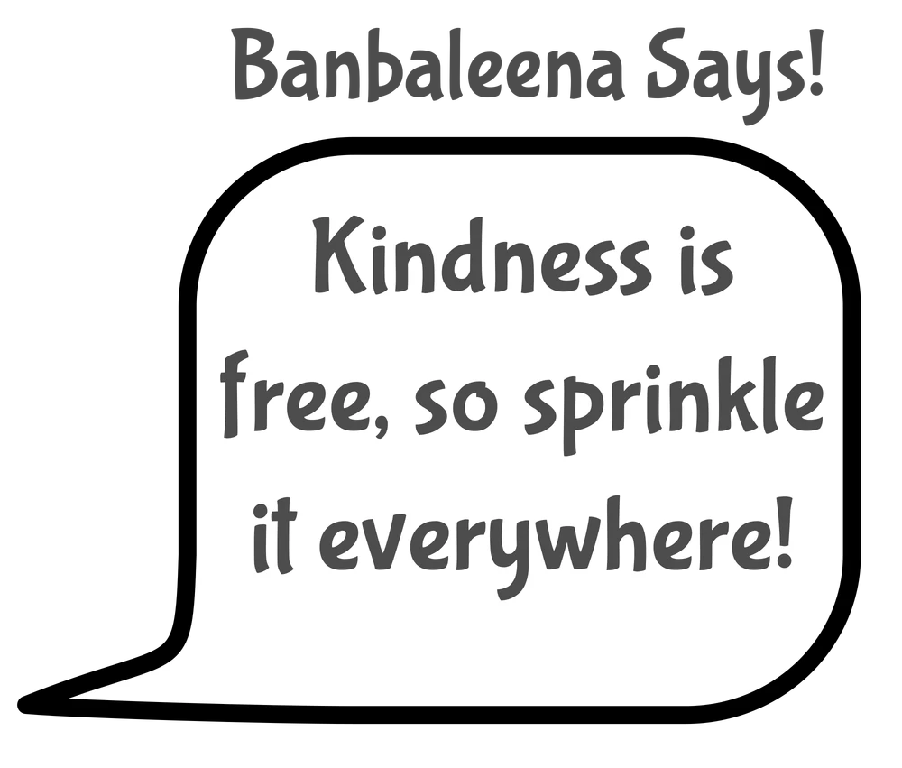
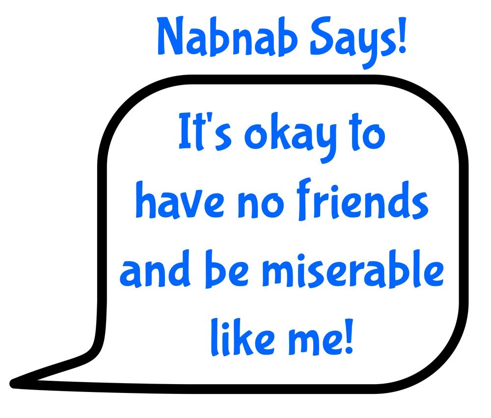
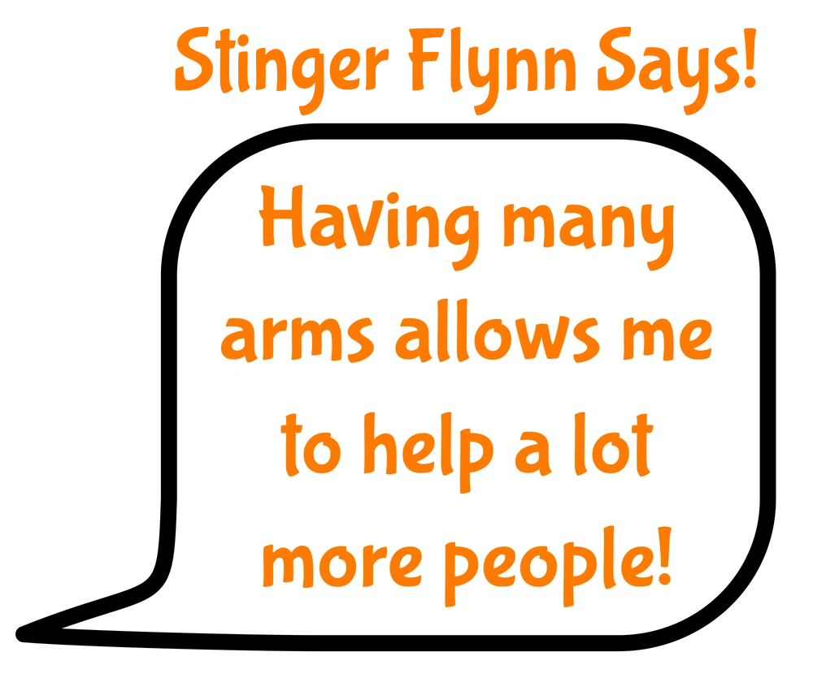
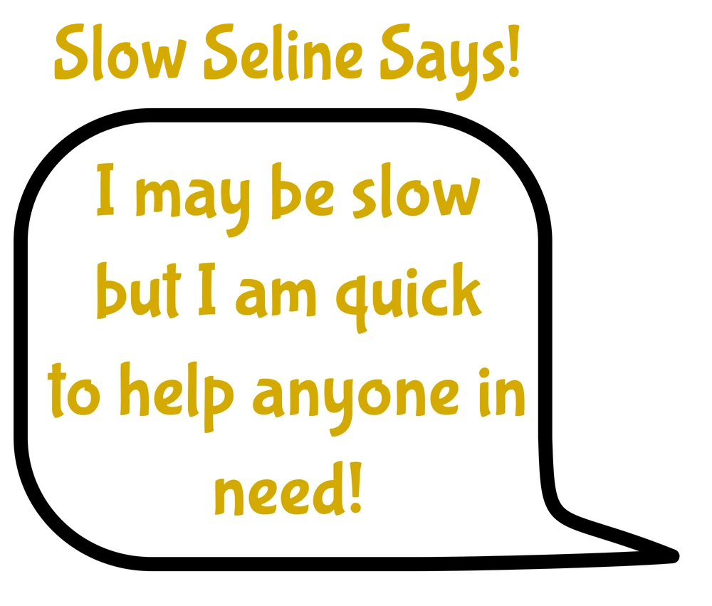

Meet the Characters!
The Player
The main character of Garten of BanBan is a parent, who is believed to be a mother based on the in-game clues given. They are who the player is playing as and is the eyes and ears for everyone. We learn everything we know through what the main character does in the games, be that finding lore tapes, getting paper reports, or just going along with the game.
BanBan
BanBan is the title star of the game. He was created using Dr. Uthman’s genome and givanium. He is the main experiment who helps the main character throughout the games.
Banbaleena
Banbaleena is the female version of BanBan. She was created using Dr. Mason’s genome and givanium. She was made to see if she could help control BanBan’s more aggressive issues. She’s one of the bosses in later chapters of the games, before she becomes friendly and helps you.
Captain Fiddles
Captain Fiddles is a background character we don’t know much about. He was created using a wooly spider monkey’s genome and givaium. He gets kidnapped in one dream sequence but apart from wall art, not much is known about him. We do see his crew during Chapter Two though!
Jumbo Josh
Jumbo Josh has a history of flicking back and forth between helping us or not. He was created using a gorilla’s genome and givanium. He is the reason we fall during the end of Chapter One and the very beginning of Chapter Two, but he saves us in later chapters. /p>
NabNab
NabNab, like other characters, tends to help you as the games go on. He was created using a spider’s genome and givanium. He is one of the characters who is on your side, helping you escape in the last scene of Chapter Six.
Nabnaleena
You create Nabnaleena in Chapter Three to be a friend for NabNab. It’s unknown what her genome is, however it is known that she does have givanium- as it is the binding force that creates every one of the experiments. She is forcefully turned evil by the Naughty Ones at the end of Chapter Six.
Stinger Flynn
Stinger Flynn is one of the main antagonists for the majority of the games. He was created using a human’s genome, an Atlantic Sea Nettle’s genome, and givanium. He wants to become a brainless jellyfish and the best way to force a change like that is adding more than three genomes- so he wishes to use the kids to force this change.
Sheriff Toadster
Sheriff Toadster is another one of the current antagonists of the main games. He is a combination of bufo bufo genomes, human genomes, and givanium. He is seeking to protect his friends from criminals and is willing to do whatever it takes to keep them safe. He is currently on bad terms with the player as they teamed up with Bittergiggle.
Bittergiggle
Bittergiggle is a former enemy who turned good and was on the player’s side until they were forcefully turned against them by the Naughty Ones. He is a combination of human genomes and givanium.
Slow Seline
Slow Seline is a background character who does not interact with the player as much as other characters do. She is a combination of givanium and Snail genomes. She doesn’t really have a side either way, but as of right now, her fate is unknown due to her not appearing in Chapter Six.
Queen Bouncelia
Queen Bouncelia is one of the more prevalent background characters from Chapter Four and Chapter Six. The Queen is super positive and is hands down one of the most lighthearted characters in the game. She is made of givanium and kangaroo genomes. She is believed to be dead unfortunately.
Opila Bird
SOpila Bird is a character who doesn’t care about anyone other than their young. They are made of flamingo genomes and givanium. While they are helpful at times, they mostly will just attack you because you are human.
Check It Out!
Want to explore more of the games? Check out these pages!